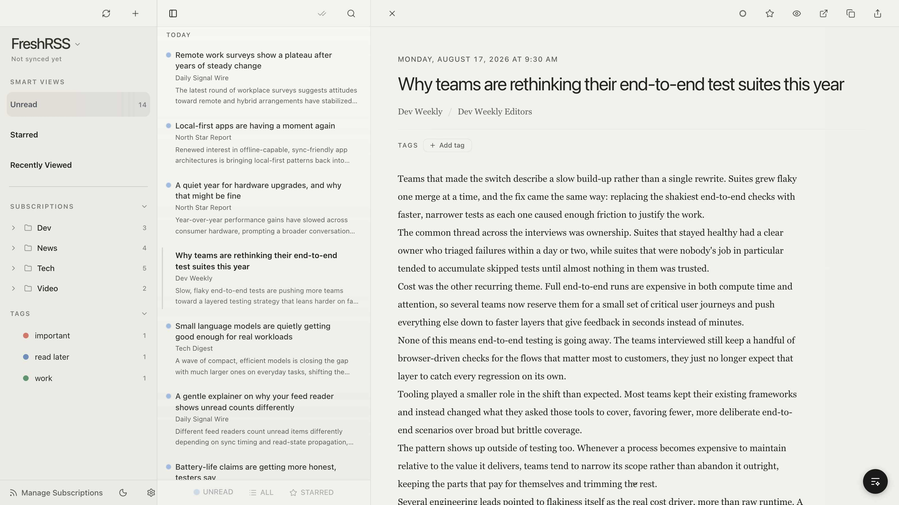

Ultra RSS Reader
フィードは、あなたの手元に。キーボード操作中心のデスクトップ RSS リーダー。全文検索はオフラインで動き、FreshRSS と同期できます。アカウント不要・クラウド不要・サブスク不要。
macOS 注意: 現在リリースは ad-hoc 署名(Apple Developer ID
なし)のため、初回起動時に Gatekeeper の警告が出ます。アプリを右クリック →「開く」、または
xattr -dr com.apple.quarantine "/Applications/Ultra RSS Reader.app" を実行してください。

なぜ Ultra RSS Reader?
全記事が組み込み SQLite に保存され、FTS5 全文検索がオフラインで動作します。
Google Reader API 経由で FreshRSS サーバーと接続。既読・スターは双方向同期し、ローカルの未送信変更が古いリモート状態で巻き戻されないよう保護されます。
パスワードやトークンは Keychain / Credential Manager / Secret Service に保存され、データベースには入りません。
j/k ナビゲーション、単キーアクション、任意のフィードへ直接ジャンプできる
⌘K コマンドパレット。バインドはすべてカスタマイズ可能です。
Web Preview が配信元ページをアプリ内に埋め込み、専用のブラウザ操作を提供します。
キーボードショートカット
すべて設定でカスタマイズ可能。既定値:
| キー | 動作 | キー | 動作 |
|---|---|---|---|
| j / k | 次 / 前の記事 | m | 既読切替 |
| h / l | 前 / 次のフィード | s | スター切替 |
| Space / Shift+Space | 記事スクロール | a | すべて既読 |
| v | アプリ内ブラウザで開く | b | 外部ブラウザで開く |
| / | 検索 | f | フィルタ切替 |
| ⌘1 / ⌘2 / ⌘3 | 未読 / すべて / スター | u | サイドバーへフォーカス |
| ⌘K | コマンドパレット | ⌘\ | サイドバー表示切替 |
| Esc | 閉じる / クリア | ⌘, | 設定 |
他のリーダーとの違い
優れた RSS リーダーは他にもたくさんあり、何を重視するかで最適解は変わります。
Ultra RSS Reader は、記事のアーカイブを自分のマシンに置いておきたい人、そして手をキーボードから離したくない人のために作っています。取得した記事はすべてローカルの SQLite に残り、オフラインで全文検索できます。同期は任意で、自分の FreshRSS サーバーに向けることも、アカウントなしで使うこともできます。MIT ライセンスの無料ソフトウェアです。
Apple プラットフォームで完成度の高いネイティブリーダーが欲しいなら NetNewsWire や Reeder が優れています。モバイルアプリや記事推薦を含むホスティング型サービスが欲しいなら Feedly や Inoreader の方が向いています。Ultra RSS Reader はホスティング側の機能を意図的に持ちません。